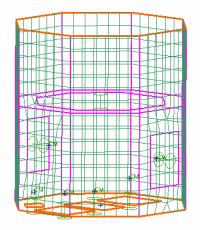

Mesh the top and floor
The 2D Mesh dialog box should still be open from the previous step.
-
 the top and floor surfaces, including the footprints of the four equipment boxes that are mounted to the floor
the top and floor surfaces, including the footprints of the four equipment boxes that are mounted to the floor

-
The dialog box settings should remain as you set them for the previous 2D mesh.
-
OK